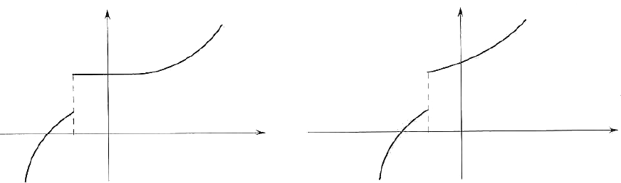

Funzioni monòtone
Sia f una funzione reale di variabile reale. Indichiamo con I il dominio di f oppure un intervallo contenuto nel dominio. Si vuole descrivere in termini rigorosi l'andamento della funzione al crescere della variabile indipendente in I.
Definizione f.1 - La funzione f dicesi monòtona crescente su I se, presi comunque due elementi x1 e xs in I con x1 < x2, si ha f(x1) ≤ f(x2); simbolicamente
∀x1,x2 ∈ I, x1 < x2 ⇒ f(x1) ≤ f(x2)
Se nella precedente relazione vale il maggiore anzichè il maggiore o uguale si dice che f è monòtona strettamente crescente su I.
Le definizione di funzione monòtona decrescente e monòtona strettamente decrescente su I si ottengono dalle corrispondenti definizioni precedenti rovesciando le disuguaglianze tra f(x1) and f(x2).
For example, x ↦ x3 è strettamente crescente; la funzione costante x ↦ k è sia crescente che non.